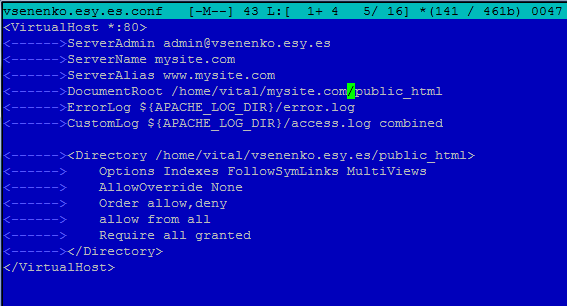
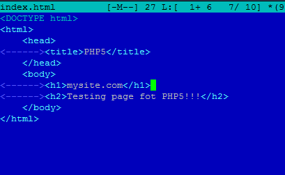
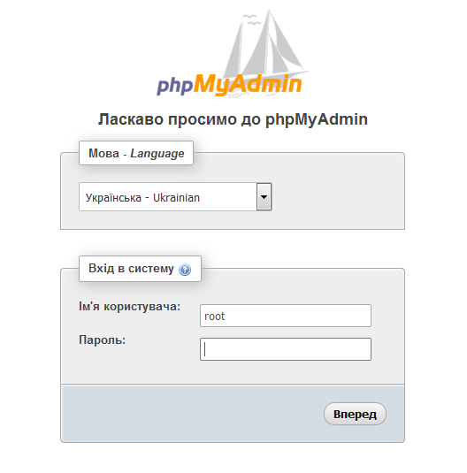

LAMP
LAMP - абревіатура набору вільного ПЗ з відкритим кодом, в який входять ОС Linux, веб-сервер Apache, СКБД MySQL, та інтерпретатор Perl/PHP/Python - основні компоненти для побудови життєздатного багатоцільового веб-сервера[1].
Існують аналогічні терміни (AMP) для подібних наборів, що працюють на інших системах, наприклад Microsoft Windows (WAMP), Mac OS (MAMP), Solaris (SAMP), чи OpenBSD (OAMP).
1. Оновлення пакетів
# apt-get update && aptitude upgrade
Перед початком встановленням потрібно оновити репозиторії пакетів.
2. MySQL
# apt-get install mysql-server mysql-client
Встановлюємо базу даних MySQL. Під час встановлення змінєюмо root-пароль. Ви ніколи не повинні використовувати цей пароль при запуску бази даних. Обліковий запис root є привілейованим акаунтом, який повинен бути використаний тільки для процедур адміністратора. Вам потрібно буде створити окремий обліковий запис користувача для підключення до баз даних MySQL вашого PHP скрипта. Ви можете додавати користувачів в базу даних MySQL за допомогою панелі управління, наприклад PhpMyAdmin.
3. Apache2
# apt-get install apache2 apache2-doc
Встановлюємо web-сервер і документацію до нього.
Створюємо папку для нашого сайту
$mkdir /home/$USER/site.com/public_html
Змінємо групу (під root'ом) і перезапускаємо сервер. username - і'мя користувача.
# chgrp www-data /home/username/site.com/public_html
# service apache2 restart
Створюєсо віртуальний хост
В каталозі /etc/apache2/sites-available створюємо файл mysite.com.conf
# touch mysite.com.conf
Вміст файлу
В каталозі /home/username/site.com/public_html створюємо файл index.html наступного змісту
Активуємо сайт і перезавантажимо сервер
# a2ensite mysite.com.conf
# service apache2 restart
Відкриваємо в браузері http://ip-address і маємо побачити створену нами сторінку.
4. PHP
Встановлюємо PHP та phpMyAdmin (програма для спрощеного керування базами даних)
# aptitude install php5 php5-mysql libapache2-mod-php5
# aptitude install phpmyadmin
В каталозі /home/username/site.com/public_html створюємо файл test.php і записуємо внього лише один рядок <?php phpinfo(); ?> після чого перезавантажуємо сервер.
Перевіряємо роботу PHP. В браузері переходимо http://ip-address/test.php і бачимо

Перевіряємо phpMyAdmin. http://ip-address/phpmyadmin
Все працює.
P.S. Якщо Ви хочете щоб працювали PHP вставки в HTML потрібно в файл conf.d добавити рядок AddType application/x-httpd-php .html або змінити розширення файлу на .php
Senenko Vitalik Org. Kyiv. 2015.